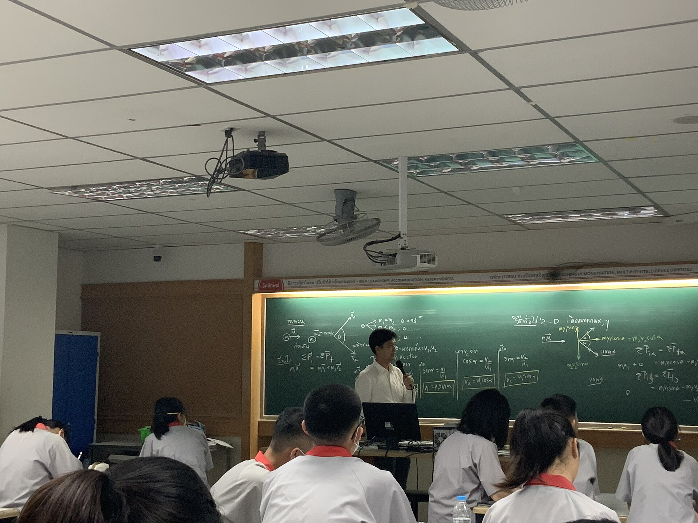
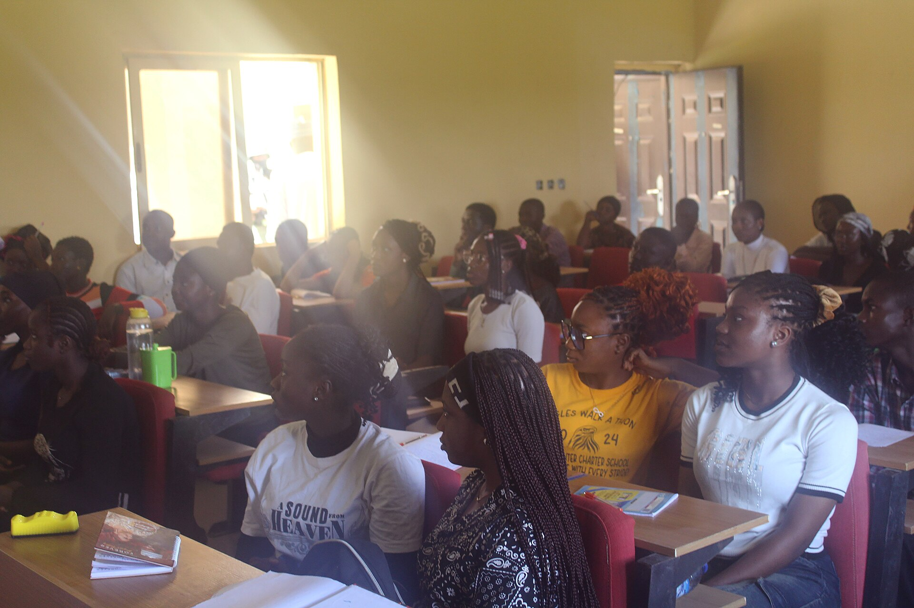

DICAS DE ESTUDO
Como aprender conteúdos novos
Compreenda conceitos, pratique com exemplos e use os erros como pistas para avançar.
Introdução
Aprender não é apenas guardar uma frase na memória. É conseguir explicar uma ideia com as próprias palavras, relacioná-la ao que já se sabe e usá-la em situações diferentes. Isso acontece aos poucos: primeiro identificamos dúvidas, depois testamos explicações e revisamos o que ainda não ficou claro.
1. Decorar e compreender não são a mesma coisa
Decorar pode ajudar a lembrar nomes, símbolos ou definições necessárias, mas compreender significa saber o que eles representam e como se relacionam. Ao estudar um conceito, pergunte “por que isso acontece?”, “como eu explicaria?” e “em que situação posso usar essa ideia?”.
Por exemplo, em vez de apenas repetir que a água ferve a determinada temperatura em certas condições, tente explicar o que significa ferver e como a pressão do ambiente pode influenciar essa temperatura. A explicação pode começar simples e ficar mais precisa com as aulas e as fontes confiáveis.

2. Uma estratégia para assuntos difíceis
Quando um tópico parecer complicado, descubra qual conhecimento anterior ele exige. Revise esse pré-requisito, procure um exemplo resolvido e acompanhe cada etapa. Depois, tente um exercício semelhante sem olhar e compare seu raciocínio. Se travar, marque o ponto exato da dúvida em vez de concluir que “não entende nada”.
Divida o tema em perguntas menores, como “o que significa cada termo?”, “qual regra está sendo usada?” e “por que este passo vem agora?”. Leve essas perguntas à aula ou a alguém que possa orientar. Alternar leitura, explicação e prática costuma revelar melhor o que está claro.
3. Use exemplos práticos e aprenda com os erros
Conecte uma ideia a uma situação conhecida. Frações podem ser exploradas dividindo uma receita; porcentagens aparecem em descontos; relações de causa e consequência ajudam a organizar acontecimentos históricos. Exemplos dão significado, mas confira se a situação representa corretamente o conceito estudado.
Ao errar uma questão, não apague apenas a resposta. Identifique o tipo de erro: leitura do enunciado, conceito, cálculo, unidade ou distração. Refaça a questão e registre uma observação útil, como “preciso converter minutos para horas”. Isso transforma o erro em orientação para a próxima tentativa.
4. Faça perguntas e explique para outra pessoa
Uma boa pergunta ajuda a investigar, não apenas a buscar a resposta final. Use “o que aconteceria se...?”, “como posso verificar?” e “qual é a diferença entre estes dois conceitos?”. Escreva as perguntas enquanto estuda e procure respostas em materiais da escola, livros ou explicações confiáveis.
Tente ensinar o conteúdo a alguém ou explicar em voz alta como se estivesse dando uma aula curta. Use linguagem simples e um exemplo. Se perceber que não consegue explicar uma parte, volte a ela, confira a fonte e tente novamente. Ensinar é uma forma de testar a compreensão, não uma prova de que precisa saber tudo de memória.

5. Pensamento crítico e verificação da aprendizagem
Pensar criticamente é comparar evidências, identificar suposições e considerar se uma conclusão realmente decorre das informações disponíveis. Ao ler uma afirmação, pergunte quem a produziu, quais dados apresenta e se outras fontes confiáveis concordam. Distinguir opinião, exemplo e evidência também ajuda a estudar.
Para verificar o que aprendeu, tente explicar sem consulta, resolver uma questão diferente da praticada e apontar o que ainda causa dúvida. Conseguir reconhecer limites é parte da aprendizagem; isso indica onde buscar mais explicação.
Erros comuns
- Reler sem se perguntar se consegue explicar ou aplicar.
- Desistir diante do primeiro exercício difícil em vez de localizar a dúvida.
- Copiar respostas prontas sem entender os passos.
- Usar uma analogia como se fosse uma explicação completa e literal.
Resumo
Conecte o novo ao que já sabe, divida dificuldades, use exemplos, pratique sem consulta e analise erros. Faça perguntas e confira suas explicações em fontes adequadas.
Conclusão
Você não precisa entender tudo de uma vez. Escolha um conceito, escreva uma pergunta e tente explicá-lo com um exemplo. Cada dúvida localizada torna o próximo estudo mais claro. Aprender é um processo de tentativas, revisões e descobertas.